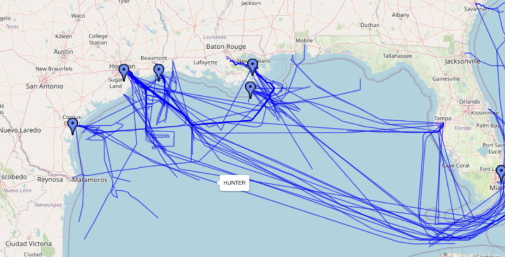

Ce site vise à analyser et modéliser les comportements de navigation des navires à partir des données AIS. Grâce à l'intégration des technologies Big Data, Intelligence Artificielle et Développement Web, l'application permet de visualiser et prédire les trajectoires des bateaux dans le Golfe du Mexique.
